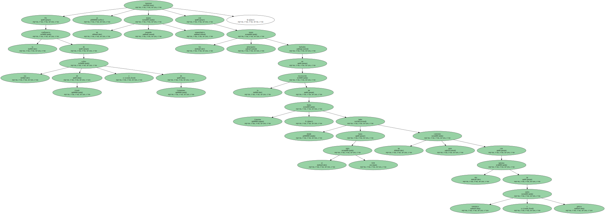
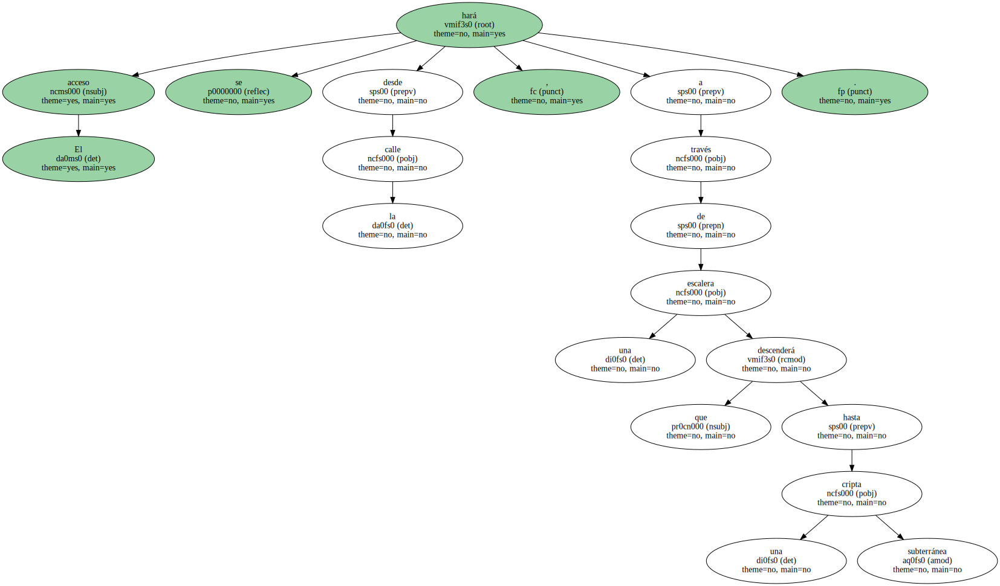
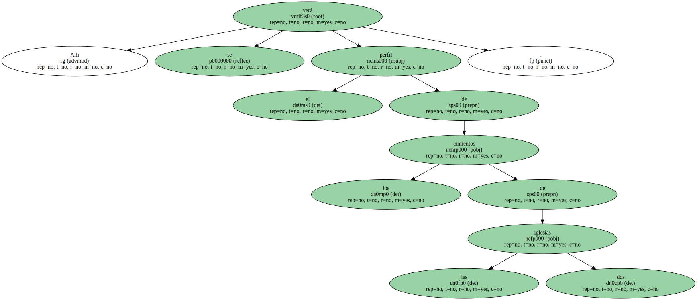
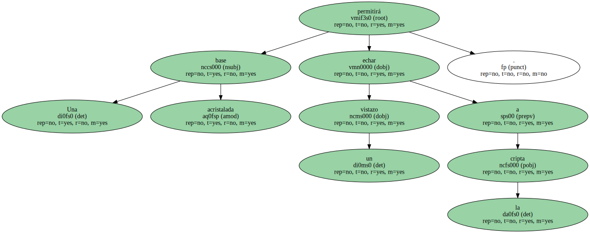

En la confluencia de las calles de Giralt y de Colomines se instalará un pequeño museo arqueológico con los principales restos hallados en la excavación de Santa Caterina , donde hasta el siglo XIX hubo un gran convento con dos iglesias de estilo románico y gótico.
El acceso se hará desde la calle , a través de una escalera que descenderá hasta una cripta subterránea.
Allí se verá el perfil de los cimientos de las dos iglesias.
Los arquitectos han diseñado en la superficie tres elementos escultóricos que recuerdan ánforas o restos arqueológicos.

Una base acristalada permitirá echar un vistazo a la cripta.
